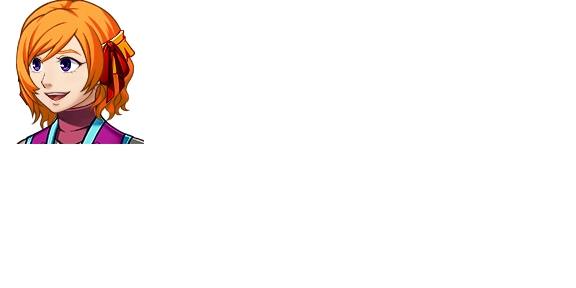

| Abby | |
 | |
| Attributes | |
| Name Meaning: | N/A |
| Unique Ability: | Becoming stronger every Chapter |
| Class Title: | Maitalea |
| Location: | Everywhere |
| Role: | Playable Character (Chapters 1, 4, 6, 7); Advisor (Chapters 0, 2, 3) |
| Affiliation: | Abby's Faction (Pregame-Chapter Seven), Solvers (Chapter One-Seven), None (Chapter Seven-Nine) |
| First Appearance: | Chapter Zero |
| Typing Style: | Normal. Occasionally ends clauses with a ~ to indicate a flirtatious tone. |
| Music Theme(s): | "Abby's Theme" |
| Details | |
| Species: | Game Character (Humanoid) |
| Gender: | Female |
| Eye Color: | Purple |
| Hair Color: | Orange |
| Status: | Alive |
| Links | |
| Twitter: | Link |
For the other character sharing a body with this one, see Akelarre
.Abby is kind, flirtatious, and gregarious, but also has a hidden venomous side. She is very happy with the Solvers, but if she interacts with someone she dislikes (e.g. Kara, Izoztutako), she is capable of great vitriol.
Abby has a cryptic conversation with the Avatar in Chapter Zero.
In Chapter One, Abby gives the Avatar a Universal Communicator device to talk with her. Abby joins the Avatar's party for the last third of the chapter.
In Chapter Two and Three, she acts as an advisor to the player through the Universal Communicator (joined by Lehiakide in Chapter Three).
In Chapter Four, Abby rejoins the party, and with Lehiakide, they fight against Haizea, Basati, Tximista, Zelatatu, and Simulacra-1337.
Abby again leaves the party for reasons not entirely clear during Chapter Five.
Abby rejoins the party for Chapter Six.
Abby leaves the party not long into Chapter Seven, and is not seen after the fight with The Band.
Abby's abilities are based on flirtation and infatuation.
Abby's Unique Ability causes her to become stronger each Chapter, giving her an exponential power curve greater than any other characters.
Abby can use bows as her weapon of choice, as well as swords.
Abby is very flirtatious with the Solvers and their Avatars. Abby even slept with the Avatar between Chapter One and Two.
Lance is Abby's second-in-command and trusted confidant, and they work together to achieve their goal of leaving Urrezko Kaiola. It is unknown if their relationship is platonic or romantic.
Abby loathes Kara, and will do anything to annoy or undermine her in order to achieve her goal of leaving Urrezko Kaiola.
Despite being specifically weak to most of her abilities, Lehiakide is friendly with Abby. Abby's flirtatious personality causes some problems when interacting with Lehiakide, however.
Simulacra-1337 and Abby share a hard-to-define romantic relationship. Abby is the only game character who Simulacra-1337 actually respects, and he will go out of his way to exclude her when insulting game characters in general. In turn, Abby is one of a few game characters willing to tolerate him.
Izoztutako is second only to Kara on Abby's shit list. She really does not like her.
| This page is in the folowing categories: Female Characters, Game Characters, Humanoid |